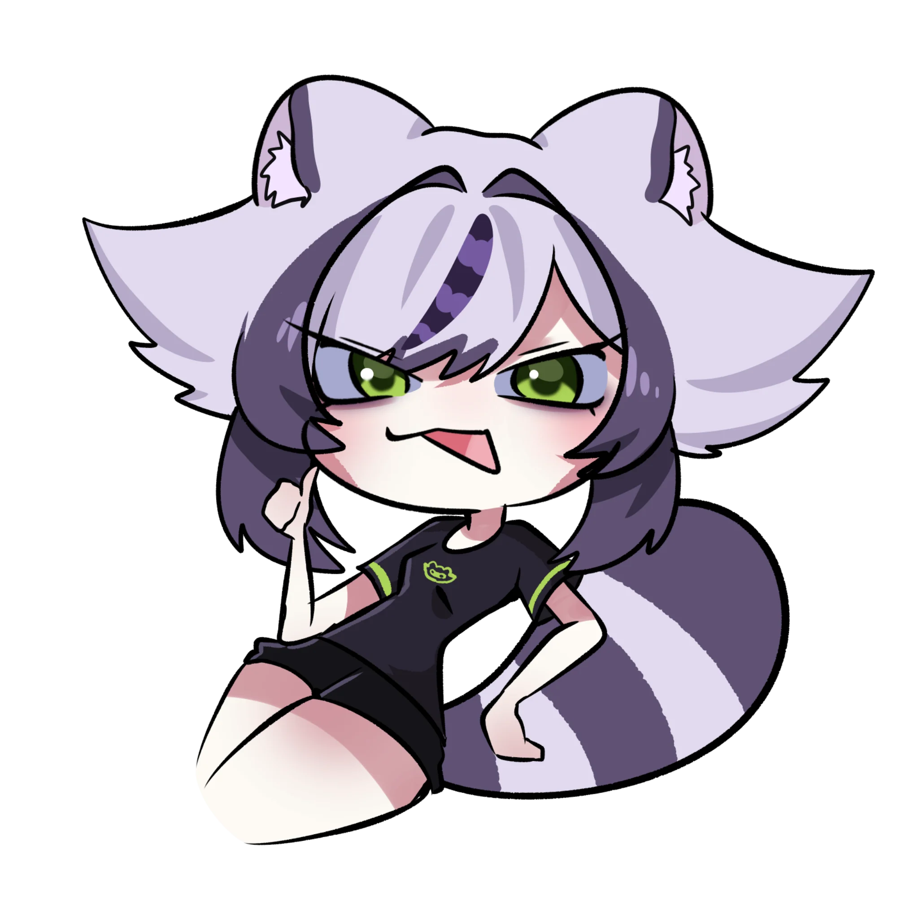
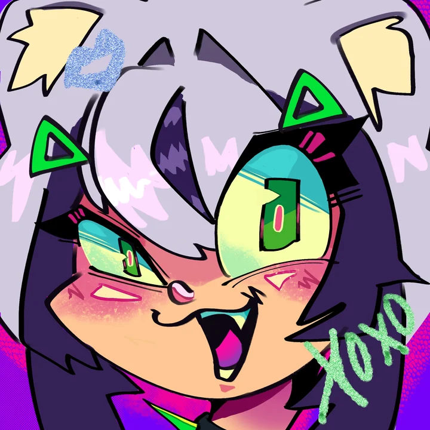
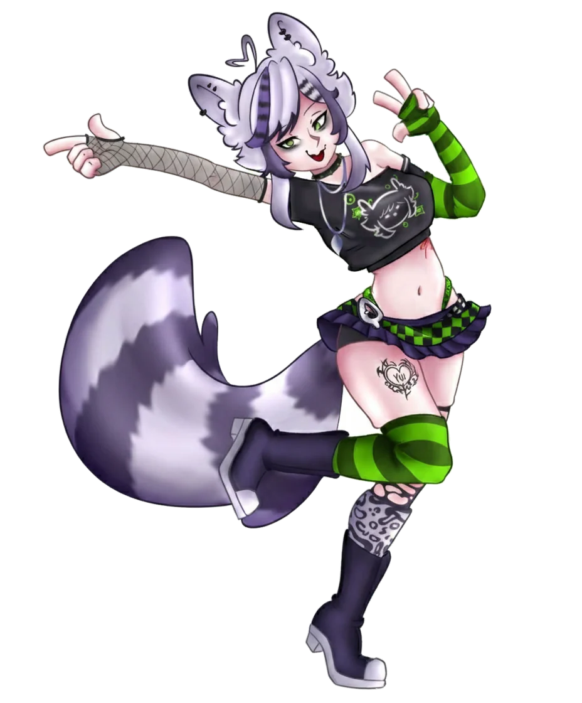

ESTO ESPILI!GRAFFITI // PILI STREET
Soy Pili, tu mapachita urbana, cyberpunk y medio caótica. Amo hacer reír a la gente, hablar sin parar, comer rico y dejar una huella brillante en el corazón de todos. Todo con mucho neón, mucho arte y cero vergüenza, JAJA.
[ ADVERTENCIA: CONTENIDO ALTAMENTE BODRIO ]

PUNK
CONOCE MÁS
SOBRE MÍ.
Me encanta dibujar, comer rico y quedarme platicando horas. Mi color favorito es el rosa, aunque viendo esta página no parezca, JAJA.
Y del lore mejor ni hablamos, porque ni yo sé qué está pasando. Ponte cómoda, aquí venimos a reírnos y a pasar el rato. ♡

✳ALGO DE
QUÉ HABLAR
DALE
PLAY_
Una rolita para escuchar mientras husmeas por aquí. La pones una vez y sigue sonando en bucle. 💜
Mousse T. feat. Hot 'n' Juicy — Horny (SID37OX Remix)
Presiona reproducir para empezar ♡
MIS CLIPS_
Me pasan tantas cosas en directo que algunas tenían que quedar grabadas. Aquí están los clips más vistos.
CARGANDO CLIPS…
Buscando los mejores momentos de la mapache.
¿ME INVITAS
UN CAFÉ?
¿Te gusta lo que hago? Puedes invitarme un cafecito por Ko-fi. No hace falta, pero me alegraría muchísimo. ♡
La pobreza me consume, pero el cariño me mantiene con pilas, JAJA.
APOYARME EN KO-FI ↗El tarrito solo suma apoyos confirmados por Ko-fi cuando el webhook está conectado; no aumenta por visitar el enlace ni representa dinero recaudado.
Consultando tu tarrito de Ko-fi…
PARED DE NOTITAS_
¡Déjame una notita! Los mensajes se publican para todas las personas que visiten la página. No compartas información privada.
DEJA TU MARCA!
Este muro es para rayarlo sin meterse en problemas. Toca cualquier parte y deja un grafiti de colores.

[ 06 / ÚLTIMO NIVEL ]¡DALE CLIC!
A ver quién se queda con el primer puesto. Escribe tu apodo y empieza a darle, JAJA.
Guarda tu apodo para empezar. 💚
✳ TOP DE LA GUARIDA
El ranking es compartido entre quienes juegan.
- Cargando posiciones…
Competencia casual: sin cuentas verificadas y sin protección total contra trampas.